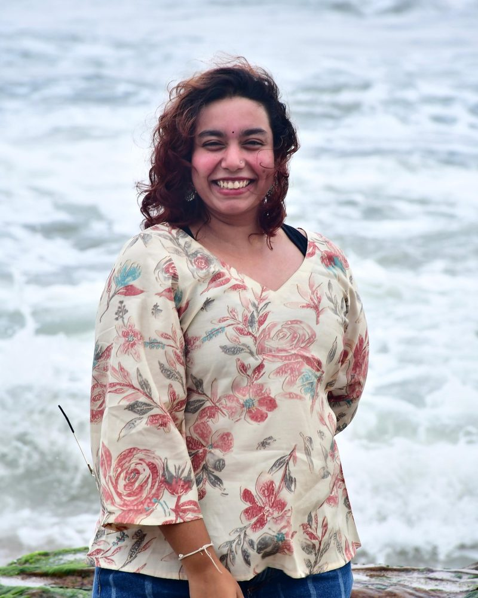

B.Tech CSE (IoT) student building embedded systems, AI-powered devices and safety-critical software. Industrial trainee at BHEL Bengaluru and author of a systems-engineering thesis on KAVACH, India’s Automatic Train Protection system. CGPA 8.92.

Trained at the Solar Business Division on manufacturing, production workflows, QA and system integration. Studied railway signalling and KAVACH through technical discussions and documentation.
CertificateBuilt tax-lot based profit-and-loss calculations and backend transaction logic for a Position Tracker covering transaction- and portfolio-level PnL.
CertificateRemote internship in the Business Development Department: process coordination, stakeholder communication and day-to-day operations.
Letter of recommendationA 360° 3D lab with drag-and-drop apparatus and real-time titration. A Gemini-powered tutor and a rule-based engine catch unsafe or out-of-order steps, and the lab notebook fills itself in.
GitHubAnalysis of the architecture, operating modes, communication framework and functional safety of India’s Automatic Train Protection system, with a mode simulator and a digital twin.
Thesis report SimulatorVision-based obstacle detection with automatic braking, GPS geofencing, caregiver alerts and sensor fusion across camera, IMU and proximity sensors.
Technical reportBinary-overwrite data sanitisation with cryptographic verification of every wipe and AI-based anomaly detection.
GitHubA wearable that detects falls from motion-sensor data and alerts caregivers automatically.
DocumentationAn ADHD-friendly productivity platform with mood tracking, journaling, facial-expression analysis and gamified focus tools.
GitHubDesigning an ESP32-S3 + BLE wearable that pairs biometric sensing with mood analysis, with apps for the wearer, therapist and family.
A startup-idea validation platform, a stress and self-care app, and a gamified film-based learning platform.
Cheugy on GitHub